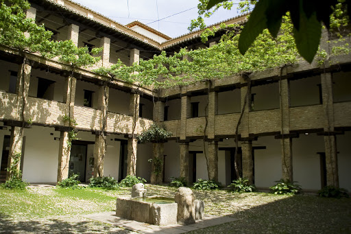
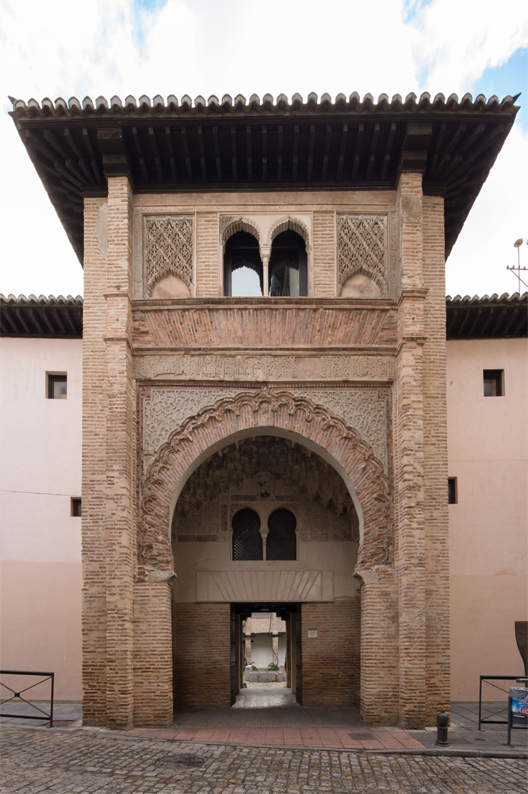

El Corral del Carbón, llamado en árabe al-fundaq al-yadida, es decir Alhóndiga Nueva, fue construido en la primera mitad del siglo XIV, teniendo como función la de almacén y punto de venta del trigo, además de alojamiento para los mercaderes que lo traían a Granada.
Tras la reconquista, en 1494, los Reyes Católicos nombraron a Juan de Arana su lugarteniente, cediéndoselo en propiedad en 1500. A su muerte, sin herederos, en 1531, la alhóndiga fue vendida en pública subasta, pasando a ser corral de comedias.
En el siglo XVII fue también corral de vecinos, usándose las habitaciones de la planta baja como almacén para el carbón, de donde le sobrevino el nombre actual.
En 1887, fue declarado Monumento Nacional, salvándose milagrosamente de la especulación. Por entonces el Corral del Carbón era una casa habitada por 36 familias.
Al Corral del Carbón se accede por una única puerta que imita la de los iwanes orientales, con un gran arco de herradura aguda de ladrillo festoneado, con albanegas de atauriques tallados en yeso. La puerta la preside la sura 112 del Corán “Dios es único, Dios es eterno, no engendró ni fue engendrado, ni tiene compañero alguno” y tiene dos ventanas geminadas, una en el piso primero y otra en el alto, siendo coronada por un bello alero con gran vuelo, sostenido por canecillos inclinados hacia arriba.
Tras la portada, el zaguán, que ocupa el espacio de los dos primeros pisos, tiene un bello techo de mocárabes y dos arcos ciegos a ambos lados, con asientos. El interior de la alhóndiga, centrado en un gran patio casi cuadrado con pilar, estaba dividido en tres pisos, el bajo para las mercancías y animales de carga, y los dos altos, cada cual con 22 pequeñas habitaciones provistas de candil, pero sin camas, con solo grandes esteras, eran las alcobas donde dormían, envueltos en grandes capas, los mercaderes. Del pilar central del patio manaba, por dos caños diferentes, agua del río Darro que llegaba por la acequia de Romayla, y agua del río Genil, que llegaba a través de un ramal urbano de la acequia Gorda.
Los pisos se apoyan sobre pilares de piedra en el piso bajo, y de ladrillo en los pisos altos, con zapatas de madera, muy similares a las que tuvo el Maristán. Todo el edificio estaba exento de ventanas, para evitar que se pudiera robar la mercancía, y a su cargo estaba el alhondiguero (fundeqayr), que vivía en las habitaciones sitas sobre la puerta, controlando la entrada y salida de mercancías. Su única puerta se cerraba herméticamente a la puesta del sol, sin que los mercaderes pudieran salir hasta el amanecer. Poco antes de la salida del sol, se les avisaba para que reunieran sus propiedades y animales, abriendo después las puertas, evitando así que alguien pudiera llevarse lo que no era suyo.
Hoy alberga una a interesante librería del Legado Andalusí. Y en su patio se realizan conciertos y actuaciones, especialmente en verano.
La visita incluye sólo el patio y una sala donde hay exposiciones temporales.
| Precio | |
|---|---|
| Entrada General | Gratis |
| Horario | ||
|---|---|---|
| Patio | Lunes a Domingo | 09:00-20:00 |
| Sala | Lunes a Viernes | 09:00-15:00 |